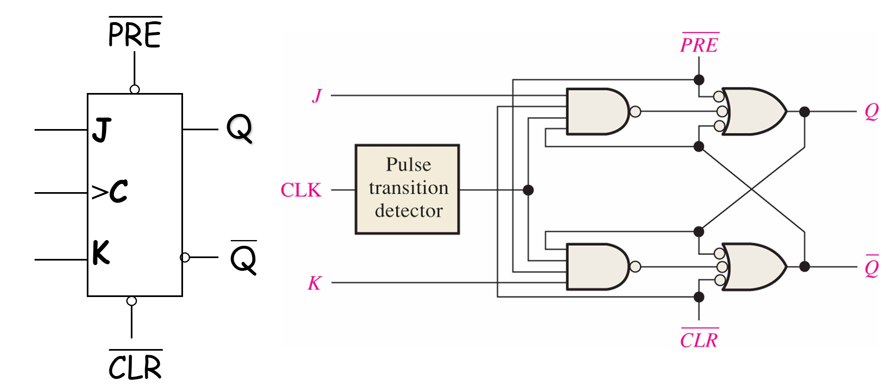

Digital Concepts
Digital and Analog Quantities
Analog Electronics involves quantities with continuous values, while Digital Electronics involves quantities with discrete values.
An analog quantity is one having continuous values in time domain. And it takes on all the infinite values in between . Sampled value discretes in time domain but continues in value, so it is not an analog quantity.
A digtal quantity discretes in both time domain and values.
Binary Digits, Logic Levels,and Digital Waveforms
Digital electronics involves circuits and systems in which there are only two possible states. These states are represented by two different voltage levels: a HIGH and a LOW. The two states can also be represented by current levels, open and closed switches, or lamps turned on and off.
Binary Digits
In digital systems, combinations of the two states, called codes, are used to represent numbers, symbols, alphabetic characters, and other types of information. The two-state number system is called binary, and its two digits are 0 and 1. A binary digit is called a bit. The higher/lower voltage level is referred to as a HIGH/LOW, or H/L. HIGH=1 and LOW=0.
Logic Levels
The voltages used to represent a 1 and a 0 are called logic levels.
Ideally, one voltage level represents a HIGH and another voltage level represents a LOW. In a practical digital circuit, a HIGH can be any voltage between a specified minimum value and a specified maximum value. Likewise, a LOW can be any voltage between a specified minimum and a specified maximum.
Digital Waveforms
Digital waveforms consists of voltage levels that are changing back and forth between the HIGH and LOW levels or states.
A single positive-going pulse is generated when the voltage goes from its normally LOW level to its HIGH level and then back to its LOW level.
A single negative-going pulse is generated when the voltage goes from its normally HIGH level to its LOW level and then back to its HIGH level.
Amplitude ()：Height from baseline.
Rise time (): The time for a pulse to go from 10% to 90% of the pulse amplitude
Fall time (): The time for a pulse to go from 90% to 10% of the pulse amplitude
Pulse width (): A measure of the duration of the pulse and is often defined as the time interval between the 50% points on the rising and falling edges.
Periodic Pulse
A periodic waveform is one that repeats itself at a fixed interval, called a period (). The frequency () is the rate at which it repeats itself and is measured in hertz (Hz). The relationship between and is expressed as follows:
The duty cycle is defined as the ratio of the pulse width () to the period () and can be expressed as a percentage.
Non-periodic Pulse
A nonperiodic waveform, of course, does not repeat itself at fixed intervals and may be composed of pulses of randomly differing pulses widths and/or randomly differing time intervals between the pulses.
A Digital Waveform Carries Binary Information
Binary information that is handled by digital systems appears as waveforms that represent sequences of bits. When the waveform is HIGH, a binary 1 is present; when the waveform is LOW, a binary 0 is present. Each bits in a sequence occupies a defined time interval called a bit time, or bit interval.
The Clock
In digital systems, all digital waveforms are synchronized with a basic timing waveform, called the clock. The clock is a periodic waveform. The clock waveform itself does not carry information.

Timing Diagrams
A timing diagram is a graph of digital waveforms showing the actual time relationship of two or more waveforms and how each waveform changes in relation to the others.
A diagram like this can be observed directly on a logic analyzer.
Data Transfer
Data refers to groups of bits that convey some type of information. Binary data, which are represented by digital waveforms, must be transferred from one circuit to another within a digital system or from one system to another in order to accomplish a given purpose.
When bits are transferred in serial form from one point to another, they are sent one bit at a time along a single conductor. To transfer bits in series, it takes time intervals.
When bits are transferred in parallel form, all the bits in a group are sent out on separate lines at the same time. There is one line for each bit. To transfer bits in parallel, it takes one time interval.
Basic Logic Operations
In Boolean algebra, there are three basic logic operations: NOT, AND, and OR.
A circuit that performs a specified basic logic operation is called a logic gate. The true/false statements mentioned earlier are represented by a HIGH (true) and a LOW (false).
The NOT operation changes one logic level to the opposite logic level. The NOT operation is implemented by a logic circuit known as an inverter (NOT gate).
The AND operation produces a HIGH output only if all the inputs are HIGH. When any or all inputs are LOW, the output is LOW. The AND operation is implemented by a logic circuit known as an AND gate.
The OR operation produces a LOW output only if all the inputs are LOW. When any or all inputs are HIGH, the output is HIGH.
The OR operation is implemented by a logic circuit known as an OR gate.
AND and OR gates can have any number of inputs.Each of the three basic logic operations produces a unique response (output) to a given set of conditions (inputs).
Number Systems, Operation and Codes
Number Systems
Decimal Numbers
In the decimal number system, each of the ten digits, 0 through 9, represents a certain quantity.
The position of each digit in a decimal number indicates the magnitude of the quantity represented and are assigned a weight.
The weights for whole numbers are positive powers of ten that increase from right to left , beginning with .
The fractional numbers, the weights are negative powers of ten that decrease from left to right beginning with .
Binary Numbers
The two digits (bits) are 1 and 0. The position of a 1 or 0 in a binary number indicates its weight, or value within the number, just as the position of a decimal digit determines the value of that digit.
A binary number is a weighted number. The right-most bit is the least significant bit (LSB) in a binary whole number and has a weight of . The weights increase from right to left by a power of two for each bit. The left-most bit is the most significant bit (MSB).
Fractional numbers can also be represented in binary by placing bits to the right of the binary point. The left-most bit is the MSB in a binary fractional number and has a weight of . The fractional weights decreases from left to right by a negative power of two for each bit.
The decimal value of any binary number can be found by adding the weights of all bits that are 1 and discarding the weights of all bits that are 0.
Hexadecima Numbers
10 numeric digits (0, 1, 2, 3, 4, 5, 6, 7, 8, 9) and 6 alphabetic characters (A, B, C, D, E, F) make up the hexadecimal number system. Each hexadecimal digit represents a 4-bit binary number.
Conversion of Number Systems
Decmial Whole Number to Binary
One way to find the binary number that is equvalent to a given demical number is to determine the set of binary weights whose sum is equal to the decimal number.
Another systematic method of converting is the repeated devision-by-two process. For a given decimal whole number, begin by dividing it by 2 and divide each quotient by 2 until there is a 0 whole-number quotient, and remainders genetered by each division form the binary number in the sequence of LSB to MSB.
Decimal Fractions to Binary
Same as before, a way to find the binary number equal to the decimal fraction is to determine a set of binary weights whose sum is equal to the decimal fraction.
But different from whole number, the systematic method for decimal fractions is repeated multiplication-by-two process. For a given decimal number, begin by multiplying it by 2 then multiplying each resulting fraction part of the product by 2 until the fractional product is 0. The carries generated by multiplication produce the binary number in the sequence of MSB to LSB.
Binary to Hexadecimal and Hexiadecimal to Binary
Simply break the binary into 4-bit group and replace each group with their binary form.
The same, the conversion from hexadecimal number to binary number is to replace each hexadecimal symbol with equicalent 4-bit binary group.
Hexadecimal to Decimal
Simply multiply the decimal value of each hexadecimal digit by its weight and take the sum of these products.
Decimal to Hexadecimal
For a decimal number, repeated divide by 16 and take its integer part as the quotient of next step until there’s no integer part left. Multiply the fraction part of each step with 16 and you will get a sequence of hexadecimal digits, which is the hexadecimal form of target number but in the order of LSB to MSB.
Binary Arithmetic
Addition, division and multiplication with binary numbers is performed in the same manner as with decimal numbers.
Signed Numbers and Arithmetic Operations
Signed Numbers
The sign bit is the left-most bit in a signed binary number. 0 is for positive and 1 is for negative.
Sign-Magnitude System
When a signed binary number is represented in sign-magnitude, the left-most bit is the sign bit and the remaining bits are the magnitude bits.
The magnitude bits are in true (un-complemented) binary for both positive and negative numbers.
In this system, compared with its corresponding positive number, a negative number has the same magnitude bits but different sign bit.
1’s and 2’s Complements of Binary Numbers
The 1’s and the 2’s complement of a binary number are important because they permit the representation of negative numbers. The method of 2’s complement arithmetic is commonly used in computers to handle negative numbers.
The 1’s complement of a binary number is found by changing all the 1s to 0s and all 0s to 1s.
The 2’s complement of a binary number is found by adding 1 to the LSB of the 1’s complement.
However, in these conversions the sign bit should not be changed.
For numbers displayed in 1’s complement system, its decimal value can be determined by summing the weights in all bit positions where there are 1s and adding 1 to the result, but the sign bit should be given a negative bit.
Litte different from the 1’s complement system, without the step of adding 1, you can determine the decimal value of a number displayed in the 2’s complement system.
Arithmetic Operation with Signed Numbers
Addition: Add the two numbers and discard any final carry bit. Overflow condition may happen.
Subtraction: to subtract two signed number, take the 2’s complement of the subtrahend and add. Discard any final carry bit.
Multiplication:
- Determine if the signs of the multiplicand and multiplier are the same or different. If same, the product is positive. If different, the product is negative.
- Change any negative number to true (uncomplemented) form.
- Starting with the LSB of the multiplier, generate the partial products. Shift each successive partial product one bit to the left.
- Add each partial product to the sum of the previous partial products to get the final product.
- If the sign of the product is negative, take the 2’s complement of the product. Attach the sign bit to the product.
Division:
- Same as multiplication, check the sign of the dividend and divisor, which will decide the sign of the result.
- Substract the divisor from the dividend using 2’s complement addition to get the first paritial remainder and add 1 to the quotient. If the partial remainder is positive, go to 3, else the division is complete.
- Substract the divisor from the partial remainder and add 1 to the quotient. If the result is positive, repeat for the next partial temainder, else the division is complete.
Binary Coded Decimal (BCD)
BCD is a way to express each of the decimal digits with a binary code… Since there are only ten code groups in the BCD system, it is very easy to convert between decimal and BCD.
Because we like to read and write in decimal, the BCD code provides an excellent interface to binary systems. Examples of such interfaces are keypad inputs and digital readouts.
Type of BCD Codes
There are a lot of BCD weighted codes (only represented numbers): 8421, 2421, 5211, 5421, etc.
Self-complement BCD codes: Ex-3, 2421.
Gray Code, ASCII…
| Binary | Decimal | 8421 | 2421 | 5211 | EX-3 | Gray |
|---|---|---|---|---|---|---|
| 0000 | 0 | 0000 | 0000 | 0000 | 0011 | 0000 |
| 0001 | 1 | 0001 | 0001 | 0001 | 0100 | 0001 |
| 0010 | 2 | 0010 | 0010 | 0100 | 0101 | 0011 |
| 0011 | 3 | 0011 | 0011 | 0101 | 0110 | 0010 |
| 0100 | 4 | 0100 | 0100 | 0111 | 0111 | 0110 |
| 0101 | 5 | 0101 | 1011 | 1000 | 1000 | 0111 |
| 0110 | 6 | 0110 | 1100 | 1001 | 1001 | 0101 |
| 0111 | 7 | 0111 | 1101 | 1100 | 1010 | 0100 |
| 1000 | 8 | 1000 | 1110 | 1101 | 1011 | 1100 |
| 1001 | 9 | 1001 | 1111 | 1111 | 1100 | 1101 |
To express any decimal number in BCD, simply replace each decimal digit with the appropriate 4-bit code. To determine a decimal number from a BCD number, start at the right-most bit and break the code into groups of four bits, then write the decimal digit represented by each 4-bit group.
BCD Addition
If a 4-bit sum is equal to or less than 9, it is a valid BCD number. If a 4-bit sum is greater than 9, or if a carry out of the 4-bit group is generated, it is an invalid result. Add 6 (0110) to the 4-bit sum in order to skip the six invalid codes and returned the code to 8421. If a carry results when 6 is added, simply add the carry to the next 4-bit group.
Parity Method for Error Detection
Many systems use a parity bit as a means for bit error detection. A parity bit is attached to a group of bits to make the total number of 1s in a group always even or always odd. An even/odd parity bit makes the total number of 1s even/odd.
Logic Gates
Basic Gates
Gate: A simple electronic circuit (a system) that realizes a logical operation.
The direction of information flow is from the input terminals to the output terminal.
The number of input and output terminals is finite and they carry binary-valued signals.
The transformation of input signals to output signals can be modeled as a logical operation such as where is the output terminal and , are the input terminals.
The Inverter Gate (NOT Gate)
The inverter (NOT) performs the operation called inversion or complementation. The inverter changes one logic level to the opposite level. In terms of bits, it changes a 1 to a 0, and a 0 to a 1.
It’s logical function is .
The negation indicator is a “bubble”() that indicates inversion or complementation when it appears on the input or output of a logic element. When appearing on the input, the bubble means that a 0 is the active or asserted input state. The appearing on the output, the bubble means that a 0 is the active or asserted output state. The absence of a bubble on the input or output means that a 1 is the active or asserted state.
The polarity or level indicator is a “triangle” that indicates inversion when it appears on the input or output logic element. When appearing on the input, it means that a LOW level is the active or asserted input state. When appearing on the output, it means that a LOW level is active or asserted output state.
The AND Gate
It’s logic function is .
The OR Gate


It’s logic function is .
Extend Gates
The NAND Gate
AND->NOT.
It’s logic function is .
The NOR Gate
OR->NOT.


It’s logic function is .
Exclusive-OR/NOR Gates
The Exclusive-OR(XOR) Gate


It’s logic function is .
The Exclusive-NOR(XNOR) Gate


It’s logic function is .
Boolean Algebra and Logic Simplification
Boolean Operations and Expressions
Boolean algebra can alse be called as Logical Algebra and Switching Algebra.
A variable is a symbol (usually an italic uppercase letter) used to represent a logic quantity. Any single variable can have a 1 or 0 value.
The complement is the inverse of a variable and is indicated by a bar over the variable (overbar). The complement of the variable is read as “not A” or “A bar”. Sometimes a prime symbol, say B’, rather than an overbar is used to denote the complement of a variable.
Boolean addition
A literal is a variable or the complement of a variable. A sum term is a sum of two or more literals. A product term is the product of two or more literals.
Boolean addition is equivalent to the OR operation and the basic rules are illustrated with their relation to the OR gates.
A sum term is equal to 1 when one or more of the literals in the term are 1. A sum term is equal to 0 only if each of the literals is 0.
Boolean multiplication
Boolean multiplication is equivalent to the AND operation and the basic rules are illustrated with their relation to the AND gates.
A product term is equal to 1 only if each of the literals in the term are 1. A product term is equal to 0 when one or more of the literals is 0.
Laws and Rules of Boolean Algebra
Commutative law of addition
Commutative law of multiplication
Associative law of addition
Associative law of multiplication
Distributive law
Some important rules: ;;;;;;;;;;;.
Demorgan’s Theorems
DeMorgan’s First Theorem
DeMorgan’s Second Theorem
Standard Foems of Boolean Expressions
All Boolean expressions can be converted into either 2 standard forms: sum-of-products (SOP) or product-of-sum (POS) forms.
To get the expression more standardized, there are another forms: Standard Sum-of-Products form, which is a sum of minterms and Standard Product-of-Sum form, which is a product of maxterms.
A standard SOP expression is one in which all the variables in the domain of a Boolean expression appear in each product term in the expression.
If the expression is true, there must be one or more products in the standard expression that must be true. So the binary representation of a term in a standard SOP expression is the binary sequence that makes the term true.
A standard POS expression can be defined in the same way as SOP. It is a expression that all variables in the domain of the expression appear in each sum term.
Binary representation can be defined as the binary sequence that makes each sum term false.
Conversion Between Different Forms
A basic rule is that for a certain logic curcuit, the binary sequence that does not appear in its standard SOP will surely appear in its standard POS form. Also, if a binary sequence does not appear in its standard POS form, it will appear in its standard SOP form.
By this rule we can convert between truth table, standard SOP and standard POS quickly.
The Karnaugh Map
Karnaugh map provides a systematic method for simplifying Boolean expressions and will produce the simplest SOP or POS expression. However, the map supports up to 6 variables.
Karnaugh is an array of celld in which each cell corresponds to one input variable combination.
The cell in Karnaugh map is specially designed so that there is only a single variable change between adjacent cells, and adjacency is defined by a single-variable change.
You can imagine the Karnaugh as a infinite page and each cell is adjacent to the cells immediately next to it from four sides but not adjacent to the cells that diagonally touch any of its coners.
Combinational Logic Analysis
Logic circuit can be divided into combinational circuit and sequential circuit.
Adders
The Half-Adder
The halt-adder accepts two binary digits on its inputs and produces two binary digits on outputs, a sum bit and a carry bit.
The Full-Adder
The full-adder accepts two inputs and a input carry and generated a sum output and an output carry. It is implemented with two half-adders.
Parallel Binary Adders
A group of four bits is called a nibble. A basic 4-bit parallel adder is implemented with four full-adders.
Ripple Carry Adder
Ripple Carry Adder is one in which the carry output of each full-adder is connected to the carry input of the next higher-order stage. The sum and the output carry of any stage cannot produced until the input carry occurs; this causes a time delay in the addition process.
Look-Ahead Carry Adder
The look-ahead carry adder anticipates the output carry based on the input bits, and produces the output carry by either carry generation or carry propagation.
We set and and we have:
It is easy to find out that the final carry has no relationship with another carries. So we can calculate the carry by the input and design look-ahead carry adder.
Comparators
Decoders
Basic function of a decoder is to detect athe presence of a specified combination of bits on its inputs and to indicate the presence of the code by a specified output level.
Encoders
An encoder is a combinational logic circuit that essentially performs a reverse decoder function.
An encoder accepts an active level on one of its inputs representing a digit, such as a decimal or octal digit, and converts it to a coded output, such as BCD or binary. Encoders can also be devised to encode various symbols and alphabetic characters.
The process of converting from familiar symbols or number to a coded format is called encoding.
All inputs and outputs are active LOW.
is Enable Input. When inactive, all outputs are deactivated.
is Enable Output. It is active if EI is active and none of the inputs is active.
is Gate Strobe. It is active if EI is active and any of the inputs is active.
Coder Converters
A code converter can convert a code to another, such as BCD to Binary and Binary to Gray.
Conversion between Binary and Gray
Take the MSB as the first digit of Gray, then start from MSB and make XOR calculation between each neighbouring digits whose result serve as digit of Gray code (). Here is an example:
1 | Binary: 1 0 0 1 |
Take the LSB as the last digit of Binary, then start from LSB and make XOR calculation between last result and next Gray digit whose result serve as digit of Binary conde (). Here is another example:
1 | Gray: 1 1 1 0 |
Multiplexers
A multiplexer (MUX) is a device to choose a signal input from serval inputs. It allows digital information from serval sources to be routed onto a single line for transmission over that line to a common destination.
So we have a logic diagram for 4-bit data selector.
And here is a logic diagram of 16-inputs multiplexer.
Demultiplexer
A demultiplexer (DEMUX) basically reserves the nultiplexing function. It takes data from one input and distribute it to a given number of output lines. You can simply treat it as a data distributor.
Parity Generators / Checkers
Using XOR gates to generate or check parity of data.
Here is a medium-scale integration 9-bit parity generator / checker 74LS280.
When the device is used as an even parity checker, the number of input bits that are highs should always be Even; and when a parity error occurs, the Even output goes LOW and the Odd goes HIGH.
When the device is used as an even parity generator, take odd output as the parity bit.
Latches, Filp-Flops and Timers
Bistable devices have two stable states, called SET and RESET. They are used as storage devices.
Monostable devices (monostable trigger, one-shot) have one stable state. They are used as timers.
Astable devices (multivibrator) do not have stable state. They are used as waveform generators.
Latches
An active-HIGH input S-R latch is formed with two cross-coupled NOR gates.
An active-LOW input S-R latch is formed woth two cross-coupled NAND gates.
Here are an active-HIGH input S-R latch and an active-LOW input S-R latch.

Here is the truth table for an active-LOW input S-R latch.
| 1 | 1 | 0 | 0 |
| 1 | 1 | 1 | 1 |
| 0 | 1 | 0 | 1 |
| 0 | 1 | 1 | 1 |
| 1 | 0 | 0 | 0 |
| 1 | 0 | 1 | 0 |
| 0 | 0 | 0 | 1* |
| 0 | 0 | 1 | 1* |
We usually do not care those items with * mark because . So we have:
Here is a gated D latch in which .
Edge-Triggered Flip-Flops
Flip-flops are synchronous bi-stable devices.
The term synchronous means that the output changes state only at a specified point on a triggering input called the clock (CLK) which is designated as a control input C; that is, changes in the output occur in synchronization with the clock.
An edge-triggered flip-flop changes state either at the positive edge (rising edge) or at the negative edge (falling edge) of the clock pulse and is sensitive to its input only at this transition of the clock.
Edge-Triggered S-R Flip-Flop
The S and R inputs of the S-R flip-flop are called synchronous inputs because data on these inputs are transferred to the flip-flop’s output only on the triggering edge of the clock pulse.
When S is HIGH and R is LOW on the triggering edge of the clock pulse, Q is HIGH and the flip-flop is SET.
When S is LOW, R is HIGH, Q is LOW and flip-flop is RESET.
When S and R are both LOW, the output does not change from its prior state.
When S and R are both HIGH, it is an invalid condition.
Flip-flop making a transition between RESET state and SET state on the positive-going edge of the clock pulse.
J-K Filp-Flop
Here is its truth table.
| 1 | 1 | 0 | 1 |
| 1 | 1 | 1 | 0 |
| 0 | 1 | 0 | 0 |
| 0 | 1 | 1 | 0 |
| 1 | 0 | 0 | 1 |
| 1 | 0 | 1 | 1 |
| 0 | 0 | 0 | 0 |
| 0 | 0 | 1 | 1 |
Asynchronous Preset and Clear Inputs

One-shots
The one-shot is a monostable device. Once it is triggered, the one-shot remains in its unstable state for a predetermined length of time and then automatically returns to its stable state. The time that the device stays in its unstable state determines the pulse width of its output.
A single narrow trigger pulse produces a single output pulse whose time duration is controlled by the RC time constant.
555 Timer
The 555 timer is a versatile and widely used device because it can be configured in three different modes as either a Schmitt trigger, a monstable multivibrator (one-shot), or an astable multivibrator (oscillator).
Counters
The term asynchronous refers to events that do not have a fixed time relationship with each other and, generally, do not occur at the same time.
In asynchronous counters, commonly called ripple counters, the first flip-flop is clocked by the external clock pulse and then each successive flip-flop is clocked by the output of the preceding flip-flop. So the flip-flops within an asynchronous counters do not change states at exactly the same time.
In synchronous counters, the clock input is connected to all of the flip-flops so that they are clocked simultaneously.
Asynchronous Counter
A 2-Bit Asynchronous Binary Counter
This circuit consists of two flip-flops. The CLK is applied to the clock input of the first flip-flop. The second flip-flop is triggered by the output of the first flip-flop.
The maximum cumulative delay in a counter must be less than the period of the clock waveform.
Asynchronous Decade Counter
The modulus of a counter is the number of unique states that the counter will sequence through. The maximum possible number of states (maximum modulus) of a counter is , where is the number of flip-flops in the counter.
Counters can also be designed to have a number of states in their sequence that is less than . The resulting sequence is called a truncated sequence.
Counters with ten states in their sequence are called decade counters. A decade counter with a count sequence of 0 through 9 is a BCD decade counter.
Synchronous Counter
With respect to counter operation, synchronous means that all the flip-flops in the counter are clocked at the same time by a common clock pulse.
Here is a 3-Bit Synchronous Binary Counter and we can see that , and .
The following is a classic 4-bit synchronous binary counter 74HC163.
And here is its function table:
Up / Down Synchronous Counter
An up/down counter is one that is capable of progressing in either direction through a certain sequence.
An up/down counter, sometimes called a bidirectional counter, can have any specified sequence of states.

Here is a up / down decade counter 74LS190.
And here is its function table.

Design of Synchronous Counters
General Design Procedure for Sequential Circuit
- State Diagram. A counter is first described by a state diagram which shows the progression of states through which the counter advances when it is clocked.
- Nexr-State Table. The next state is the state that the counter goes to from its present state upon application of a clock pulse.
- Flip-Flop Transition Table.
- Karnaugh Maps. Karnaugh maps can be used to determine the logic required for the J and K inputs of each flip-flop in the counter. There is a Karnaugh map for the J input and a Karnaugh map for the K input of each flip-flop. In the design procedure, each cell in a Karnaugh map represents one of the present states in the counter sequence listed in next-state table.
- Logic Expressions for Flip-Flop Inputs.
- Counter Implementation.
Cascaded Counters
Counters can be connected in cascade to achieve higher-modulus operation. In essence, cascading means that the last-stage output of one counter drives the input of the next counter.
Counter Decoding
In many applications, it is necessary that some or all of the counter states be decoded. The decoding of a counter involves using decoders to determine when the circuit is in a certain state in its sequence.
The difference of propagation time produces undesired spikes of short duration for asynchronous counter.